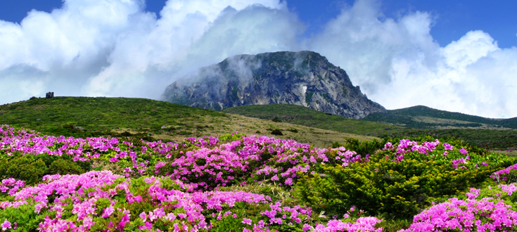

한라산

우리나라 3대 영산(靈山)중의 하나인 한라산은 한반도의 최남단에 위치하고 있으며,
해발 1,950m로 남한에서 가장 높다.
또 다양한 식생 분포를 이뤄 학술적 가치가 매우 높고 동·식물의 보고(寶庫)로서, 1966년 10월 12일 천연기념물 제182호인
한라산천연보호구역으로 지정·보호되고 있다. 신생대 제4기의 젊은 화산섬인 한라산은 지금으로부터 2만5천년 전까지
화산분화 활동을 하였으며, 한라산 주변에는 50여 개의 ‘오름’들이 분포되어 있어 특이한 경관을 창출하고 있다.
또한 섬 중앙에 우뚝 솟은 한라산의 웅장한 자태는 자애로우면서도 강인한 기상을 가슴에 품고 있는 듯하다. 철 따라 어김없이
바뀌는 형형색색(形形色色)의 자연경관은 찾는 이로 하여금 절로 탄성을 자아내게 하는 명산으로, 1970년 3월 24일 국립공원으로
지정되었고, 2002년 12월에는 ‘UNESCO 생물권 보전지역’으로 지정되었다.
특히 태고의 신비를 그대로 간직한 한라산과 아름다운 땅 제주는 신이 우리에게 선물한 최고의 보물이자 세계인이 함께 가꾸어야
할 소중한 유산으로 인정받아 2007년 6월 27일 ‘제주 화산섬과 용암동굴’이 우리나라 최초의 유네스코 세계자연유산으로 등재되었고,
2010년 10월 4일 세계지질공원으로 인증받았다.
찾아가는길